(THEORY)
(ANALOG)
(DIGITAL)
(SOFTWARE)
(HOME)
A homemade receiver for GPS & GLONASS satellites
Matjaz Vidmar, S53MV (ex YU3UMV, YT3MV)
1. Introduction to GPS & GLONASS
Radio amateurs have always been interested in space
technology, since the latter strongly depends on reliable
radio communications. Of course radio amateurs are not
only interested in amateur-radio satellites: almost any
artificial Earth's satellite represents a challenge, either to
receive its weak signal on rather high frequencies or to
demodulate, decode and use the data it is transmitting.
Besides amateur-radio satellites, the most interesting
satellites for radio amateurs are weather (imaging) satellites:
radio amateurs have successfully built weather-satellite image
reception equipment for all known weather satellites and all
known image transmission standards. Radio-amateurs also
pioneered satellite TV reception using small antennas much
earlier than this became a mass-produced consumer product.
Although the first navigation satellites were launched
more than 30 years ago, satellite navigation and positioning
has only become popular in the last few years with the
introduction of reliable, accurate and easy-to-use systems
like the american Global Positioning System (GPS) and the
russian GLObal NAvigation Satellite System (GLONASS).
Both are intended to replace a variety of ground-based
radio-navigation aids and as a side product, to provide any
suitably equipped user with very accurate time (100ns) and
very accurate frequency (10^-12).
Although both GPS and GLONASS are primarily intended
for military users, there are already more civilian users of
these systems. GPS (and soon combined GPS/GLONASS) navigation
receivers can be made small, light-weight, easy-to-operate
and inexpensive like VHF FM "handy-talkie" transceivers.
Since these receivers can measure their tri-dimensional
position with an accuracy of around 50m anywhere on the
Earth's surface, their user community ranges from
pleasure-aircraft pilots to truck drivers and mountain
climbers and, why not, radio amateurs!
Besides the challenge to build a satellite receiver
radio amateurs can use GPS and GLONASS signals in other ways
as well. The most immediate application of a GPS or GLONASS
receiver is certainly as a highly accurate frequency source.
Accurate timing and synchronization may be required for
advanced communication techniques like coherent communications
or to seriously investigate the propagation path and the
propagation mechanism of radio waves. Finally, positioning
and direction-finding may be useful for high-gain microwave
antenna pointing.
In this article I am first going to describe the
satellites and the radio signals they are broadcasting.
Further I am going to describe the principles of operation of
a GPS or GLONASS receiver. Finally I am going to describe the
practical construction of homemade GPS and GLONASS receivers,
together with their operating software. These receivers can
be built in two different forms: as stand alone, portable
receivers with a small keyboard and a LCD display, or as
peripherals with their own plug-in modules for the "DSP
computer" described in [1] and [2].
2. GPS & GLONASS system description
2.1. Radio-navigation principles
Radio navigation evolved together with other applications
of radio waves. The operation of all radio-navigation systems
is based on the assumption that the propagation mechanism of
radio waves is well known and that the propagation speed of
radio waves is usually very close to the speed of light in free
space. Further, systems using radio waves usually have a
sufficient range to be practically usable for position,
velocity and attitude determination of a remotely-located
user. Finally, all of the measurements on radio waves, like
direction finding, time-delay measurements, phase measurements
or Doppler-shift measurements, can be performed with simple
and inexpensive technical means at least on the user side.
Early radio-navigation systems used the directional
properties of the receiving antenna, transmitting antenna or
both. In these systems the main sources of measurement errors
are the inaccuracies of the antenna pattern(s). Since the
measured quantity is an angle, the position error grows
linearly with increasing the distance between the remote user
at an unknown location and the navigation equipment at known
location(s). Such systems are therefore severely limited in
either the range or the accuracy and are only efficient to
bring a user to a single point, like bringing an aircraft to
the beginning of a landing runway using the Instrumented
Landing System (ILS).
Time or frequency are certainly the physical quantities
that can be measured most accurately. If the propagation speed
and propagation mode of radio waves are known, one can easily
compute the distance from a time-delay measurement. Further,
the absolute accuracy of such distance measurements does not
depend on the order of magnitude of the distances involved,
except for the uncertainties in the propagation speed of
the radio waves used. Therefore, all long-distance, precision
radio-navigation systems are based on time-delay (or signal
phase difference) measurements and/or the time derivatives
of these quantities, usually observed as the Doppler frequency
shift.
The easiest way to measure the distance to a known site
is to install a radio repeater there, transmit a signal,
receive the answer from the repeater and measure the round-trip
time. Although such radio-navigation systems were practically
implemented (like DME for civilian aircrafts), they have some
limitations due to the fact that the user needs both to
transmit and to receive radio signals. Such a system can not
accomodate an unlimited number of users since only one user
can use the radio repeater at a time and each measurement
takes some time. Some military users may also not want to
transmit any radio signals to avoid disclosing their position
to the enemy while civilian users do not want the requirement
of having their navigation equipment licensed.
The transmit requirement for the user can be dropped if
the user can achieve and maintain synchronization with the
navigation transmitters in a different way. For example,
both the user and the navigation transmitters may be equipped
with high-accuracy time/frequency sources like atomic clocks.
The user then synchronizes his clock at a known location and
the same clock is then used at an unknown location for
time-delay measurements.
Since atomic clocks are expensive, bulky and power-hungry
devices, a more simple alternative is desired for navigation
systems serving a large number of passive, receive-only users.
Such a system must have a number of synchronized transmitters
as shown on Fig.01. Since the user does not know the accurate
time, he can not measure the time delays and the distances
d1, d2, d3... to the transmitters TX1, TX2, TX3... directly.
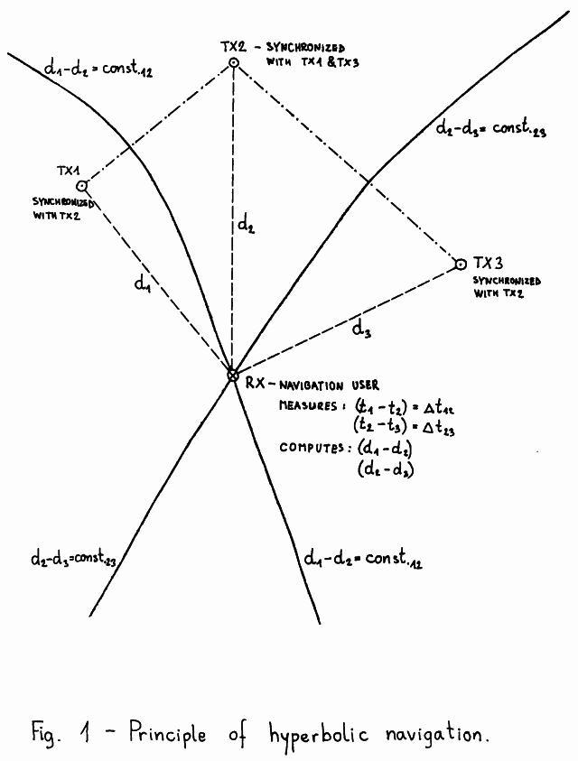
The user can only measure the differences in the
times-of-arrival of different TX signals. Time differences
correspond to distance differences. The set of points
corresponding to a given distance difference from two
given points is a hyperbola (in two dimensions) or a
rotational hyperboloid (in three dimensions). The two
transmitters are located in the focal points of the
hyperbola (rotational hyperboloid).
For two-dimensional navigation (positioning) signals from
at least three synchronized transmitters need to be received.
For example, from the measured time difference between TX1 and
TX2 the user can plot the hyperbola d1-d2=const.12 on his map.
Similarly, from the measured time difference between TX2 and
TX3 the user can plot the hyperbola d2-d3=const.23 on his map.
The two hyperbolas intersect in a point corresponding to the
unknown user location!
For three-dimensional navigation signals from at least
four synchronized transmitters need to be received. The three
independent time differences generate three different
rotational hyperboloids. Rotational hyperboloids are curved
surfaces. Two of them intersect in a curved line which in turn
intersects with the third hyperboloid in a point corresponding
to the unknown three-dimensional user position.
If there are more transmitters available, the user can
select the best set of three (four) that provide two
hyperbolas (three rotational hyperboloids) intersecting as
close as possible under a right angle(s). The remaining
transmitters can then be used to check for errors and/or
ambiguous solutions, since with curved lines and surfaces
there can be more than one intersection point.
Hyperbolic navigation systems were first implemented
as ground-based navigation systems operating in the
medium and long-wave radio frequency spectrum like LORAN,
DECCA or OMEGA. Since the transmitters are located on the
Earth's surface, the geometry of the problem does not allow
a three-dimensional navigation. These systems only measure
the longitude and latitude reliably. To measure the altitude,
one of the transmitters should be located above or below the
user's receiver or at least out of the user's horizon plane.
Ground-based radio-navigation systems use relatively
low frequencies of the radio spectrum to achieve a large
radio range and avoid undefined skywave (ionospheric)
propagation at the same time. For example, OMEGA uses the
frequency range between 10 and 14kHz to achieve world-wide
coverage with just 8 (eight) transmitters!
Long-wave radio-navigation systems were designed when
digital computers were not readily available yet:
two-dimensional navigation with fixed transmitter sites only
requires a minimum of computations to be performed by the user.
The families of hyperbolas for each transmitter pair can be
directly plotted on maps, including corrections for known
propagation anomalies.
One of the first applications of artificial satellites
was radio navigation. Obviously artificial satellites need
radio navigation themselves, to evaluate the performance of
the rocket carrier and determine the final satellite's orbit.
On the other hand, the space environment is an ideal place
for navigation transmitters, since a large radio range can be
achieved at VHF and higher frequencies where the propagation
of radio waves is predictable and the influence of the
always-changing ionosphere is marginal. Finally, the location
of navigation transmitters in space can be chosen so that
three-dimensional navigation is possible everywhere on the
Earth's surface.
Since initially the satellites could only be launched in
low-earth orbits, the first navigation satellites were launched
in low, 1000km altitude, polar orbits, like the American
TRANSIT satellites or the soviet equivalent TSIKADA. Since a
satellite in a low-Earth orbit is quickly moving along its
orbital track, a single satellite may be used for position
determination. While even a simple crystal-controlled user's
clock is sufficiently accurate for a few minutes, the satellite
significantly changes its position on the sky and this is
roughly equivalent to several navigation transmitters at
several different sites along the orbital track.
In practice the user simply measures the Doppler shift on
the satellite's signal for a certain period of time and
computes his unknown position from the result of this
measurement and the satellite's orbital data. Although a
single satellite is required for position determination,
these systems usually have from six (TRANSIT) up to twelve
satellites to improve the coverage, since a low-Earth orbit
satellite is only visible for a limited amount of time for a
user located on the Earth's surface. Since the ionosphere
still has some effect on VHF and UHF radio waves, both
American and Soviet satellites transmit on two frequencies
around 150MHz and around 400MHz. The actual channel frequencies
are kept in the precise ratio 3/8 and the transmitters are
kept coherent to allow for ionospheric corrections.
The drawbacks of low-Earth orbit navigation satellites
are that the user may have to wait for a satellite pass and
even then the measurement takes several minutes. Finally,
the user velocity, both magnitude and direction, must be known
and compensated-for in the position computation. To allow an
almost instantaneous position determination more satellites are
required. If a user has at least four visible satellites in
different parts of the sky, he can compute his
three-dimensional position instantaneously, without having to
wait for the satellites to move across the sky.
In order to limit the number of satellites required,
these have to be launched to higher orbits. Such satellite
navigation systems are the American GPS and the soviet GLONASS
that should achieve world-wide coverage with 24 satellites
each when completed. Both systems should provide at least
four visible satellites in any part of the world including
in-orbit spares and a suitable distribution of the visible
satellites on the sky to allow a three-dimensional
navigation.
Finally, one should notice that satellite navigation
systems require a large amount of computations to be performed
by the user. The satellites continuously change their
positions, so no hyperbolas could be plotted on maps.
Three-dimensional navigation is even more demanding, so that
a digital computer is absolutely necessary. Maybe this
explains why satellite positioning only became popular a few
years ago: although navigation satellites were available for
more than 30 years, inexpensive computers were not!
2.2. Satellite navigation equations
In order to understand satellite navigation systems one
should first look in the mathematical background of satellite
navigation. To perform any practical computations one should
define a coordinate system first. Most satellite navigation
systems use a right-hand Cartesian coordinate system like the
one shown on Fig.02. The coordinate system is body-fixed to
the Earth and is therefore a rotating coordinate system,
unlike the inertial coordinate system used for Keplerian
orbital elements for most satellites.
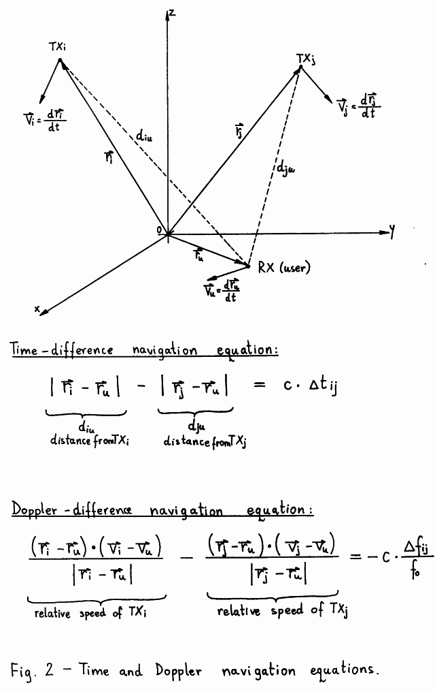
Usually, the origin of the coordinate system is the
Earth's center of mass. The Z-axis of the coordinate system
corresponds to the Earth's rotation axis and the Z-axis is
pointing north. The X-axis and Y-axis are in the equatorial
plane and the X-axis points in the direction of the Greenwich
meridian while the Y-axis is oriented so that a right-hand
orthogonal coordinate system is obtained.
However, if the user prefers a more conventional
coordinate system, like longitude, latitude and altitude
above sea level (altitude above the surface of an ellipsoid),
he can always perform the required transformations. These
transformations are always performed on the final result,
since most of the internal computations of a navigation
receiver are most easily performed in a Cartesian coordinate
system.
Finally, one should understand that there are several
different coordinate systems in use although the basic
definition is the same for all of them. Satellite navigation
systems improved the absolute positioning accuracy down to
the 1m (one meter) level, so the differences between several
local geographic coordinate systems have become noticeable.
For example, GPS is using the WGS-84 coordinate system
while GLONASS is using the SGS-85 coordinate system. The
difference between these two systems is around 10m in the
east-west direction and around 10m in the up-down direction
at the author's location in central Europe.
Using vector notation one can write down the navigation
equations in an orderly way. In a three-dimensional Cartesian
coordinate system it is easy to understand that a single
vector includes three independent quantities.
A time-difference navigation equation only includes the
range vectors representing the positions of the transmitters
(satellites) and of the receiver (user). Distances between
the user and the satellites are computed as magnitudes
(absolute values) of range vector differences. On the other
side of the equation we find the measured time difference
multiplied by the propagation velocity of radio waves (c).
If the user location - user range vector - is unknown,
this represents three scalar unknowns that require three
independent time-difference (scalar!) equations for the
solution. To obtain three independent equations at least four
transmitters are required. The solution of these equations is
not straightforward since the absolute value of a vector is a
non-linear function: it contains squaring and square-root
operations. The navigation equations are therefore usually
solved in a numerical iterative procedure, although an
analytical solution exists [3].
A Doppler-shift-difference navigation equation includes
both range vectors and velocity vectors since to compute the
Doppler frequency shift one has to obtain the velocity
difference first and then compute the projection of the
velocity difference vector on the direction of propagation of
radio waves. Vector projections are computed using the
scalar (dot) product between two vectors. On the other side of
the equation we find the measured Doppler-shift difference
in relative units, the absolute difference being divided by
the nominal carrier frequency (f0). The relative frequency
difference is then converted to velocity units by multiplying
it by the propagation velocity of radio waves (c).
The Doppler-difference navigation equations include
the user position vector and the user velocity vector and
these can be both unknown representing up to six scalar
unknowns. Since one usually does not have available six
independent Doppler-difference equations, these are usually
used in the following ways:
(1) If the user position is already available from
time-difference equations, the user velocity vector
can be computed from three independent Doppler-difference
equations.
(2) If the user velocity vector is known or the user velocity
is zero (stationary user), then the user position can be
computed from three independent Doppler-difference
equations.
(3) Various combinations of time-difference and
Doppler-difference equations are also possible.
Besides the visibility problem, the navigation equations
put some additional constraints and desirable features for
navigation satellite orbits. The final accuracy of the
navigation solution, position or velocity, depends on the
conditioning of the system of equations. An ill-conditioned
system of equations will amplify any measurement errors in
the final result. A geometrical equivalent of an
ill-conditioned system of equations is when lines or surfaces
(rotational hyperboloids) intersect at very low angles.
The accuracy degradation due to poor conditioning of the
system of equations is usually called Geometrical Dilution Of
Precision (GDOP). Of course the satellite orbits have to be
chosen to provide the lowest possible GDOP to the widest user
community: since the equations are non-linear, GDOP changes
with the user position. The users themselves have to chose the
best set of four satellites to get the lowest GDOP, since more
satellites may be visible, even at high elevations, but
providing a large GDOP.
The most obvious cause of a large GDOP with a system of
time-difference equations is when two satellites are close
together on the sky. A more general case is when all four
satellites are almost in a single plane. For the same reason
the geostationary orbit is not very suitable for navigation
satellites. The geostationary orbit has yet another
disadvantage for navigation satellites: the relative velocity
of the satellite is very low for Earth-located users and the
Doppler-difference equations themselves (not the system!) are
ill-conditioned, since the unknown user position vector is
multiplied by very small numbers.
2.3. GPS & GLONASS satellite systems
GPS and GLONASS are the first satellite systems that
require the simultaneous operation of a number of satellites.
In other satellite systems, including earlier navigation
systems, the operation of every single satellite was almost
autonomous and any additional satellites only improved the
capacity of the system. In GPS or GLONASS the satellites
need to be synchronized and can only perform as a
constellation of at least four visible satellites for every
possible user location without forgetting the GDOP
requirement!
Both GPS and GLONASS satellites are launched into similar
orbits. A comparison among GPS, GLONASS and more popular
satellite orbits like the geostationary orbit or the retrograde
sun-synchronous Low-Earth Orbit (LEO) is made on the scale
drawing on Fig.03. Both GPS and GLONASS satellites are launched
into circular orbits with the inclination ranging between 55
and 65 degrees and the orbital period in the order of 12 hours,
which corresponds to an altitude of around 20000km (one and a
half Earth diameters).
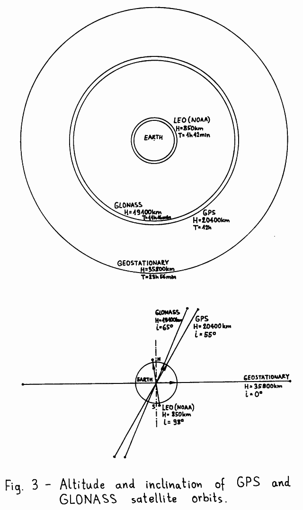
The GPS system was initially planned to use three different orbital planes with an inclination of 63 degrees and the ascending nodes equally spaced at 120 degrees around the equator. Each orbital plane would accomodate 8 equally spaced satellites with an orbital period of 11 hours and 58 minutes, synchronized with the Earth's rotation rate [4]. During a 10-year test period from 1978 to 1988 only 10 such "Block I" satellites were successfully launched in orbital planes "A" and "C" as shown on Fig.04.
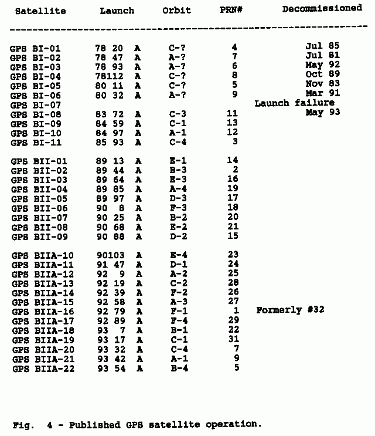
The GPS specification was changed afterwards [5] and the
new "Block II" satellites are being launched in 55-degrees
inclination orbits in six different orbital planes A, B, C, D
E and F, with the ascending nodes equally spaced at 60 degrees
around the equator. The new GPS constellation should also
include 24 satellites, having four satellites in each orbital
plane, including active in-orbit spares. The orbital period
of the GPS satellites should be increased to 12 hours to avoid
repeat-track orbits and resonances with the Earth's gravity
field.
Finally, the new "Block II" satellites also include a
nasty feature called "Selective Availability" (SA): the
on-board hardware may, on ground command, intentionally degrade
the accuracy of the navigation signals for civilian users
while military users still have access to the full system
accuracy. Beginning in 1988 and up to March 1993, 9 GPS
"Block II" and 10 new GPS "Block IIA" satellites have been
launched using "Delta" rockets. The SA-mode is currently
turned on and degrades the accuracy to between 50 and 100m.
The GLONASS system is planned to use three different
orbital planes with an inclination of 64.8 degrees and the
ascending nodes equally spaced at 120 degrees around the
equator. Each orbital plane would accomodate 8 (or 12)
equally spaced satellites with an orbital period of 11 hours,
15 minutes and 44 seconds, so that each satellite repeats its
ground track after exactly 17 revolutions or 8 days [6].
Since the beginning of the GLONASS program a large number
of satellites have been launched into GLONASS orbital planes
1 and 3, the orbital plane 2 has not been used yet. Some
satellites never transmitted any radio signals, since the
GLONASS system also includes passive "Etalon" satellites used
as optical reflectors for accurate orbit determination.
GLONASS satellites are launched three at a time with a single
"Proton" rocket. Due to this constraint all three satellites
can only be launched in the same orbital plane.
Recently observed GLONASS satellite operation is shown
on Fig.05. The observed lifetime of GLONASS satellites
seems to be shorter than that of American GPS counterparts.
A critical piece of on-board equipment are the atomic clocks
required for system synchronization. Although each satellite
carries redundant rubidium and cesium clocks, these caused
the failure of many GPS and GLONASS satellites. In addition to
this, GLONASS satellites have had problems with the on-board
computer. Unfortunately, the GPS or GLONASS orbit altitude is
actually in the worst ionizing-radiation zone, the same
radiation that already destroyed the AMSAT-OSCAR-10 computer
memory.
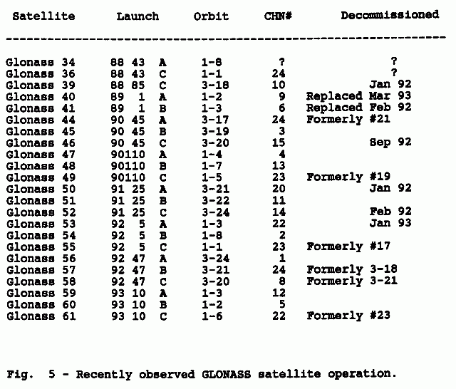
2.4. GPS & GLONASS satellite on-board equipment
Since the two systems are similar, GPS and GLONASS
satellites carry almost the same on-board equipment as shown
on Fig.06. For the navigation function alone, the satellites
could be much simpler, carrying a simple linear transponder
like on civilian communications satellites. The required
navigation signals could be generated and synchronized by a
network of ground stations.
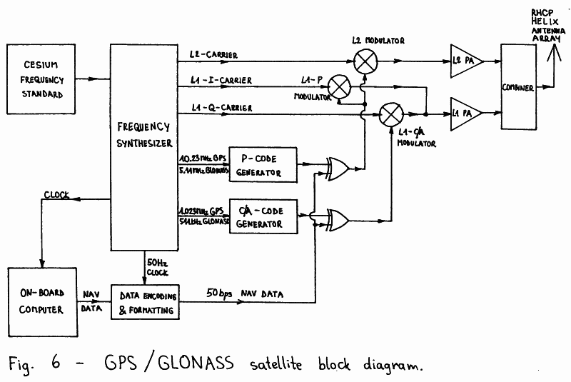
However, both GPS and GLONASS are primarily intended as
military systems. Uplinks are undesired since they can be
easily jammed and a network of ground stations can be easily
destroyed. Therefore, both GPS and GLONASS satellites are
designed for completely autonomous operation and generation
of the required signals. Synchronization is maintained by
on-board atomic clocks that are only periodically updated
by the ground stations.
Both GPS and GLONASS satellites carry a cesium atomic
clock as their primary time/frequency standard, with the
accuracy ranging between 10^-12 and 10^-13. Much smaller
and lightweight rubidium atomic clocks are used as a backup
in the case the main time/frequency standard fails, although
rubidium atomic clocks are an order of magnitude less
accurate. Due to the stable space environment these atomic
clocks usually perform better than their ground-based
counterparts and any long-term drifts or offsets can be easily
compensated by uploading the required correction coefficients
in the on-board computer.
The output of the atomic time/frequency standard drives a
frequency synthesizer so that all the carrier frequencies and
modulation rates are derived coherently from the same
reference frequency.
The on-board computer generates the so-called navigation
data. These include information about the exact location
of the satellite, also called precision ephemeris, information
about the offset and drift of the on-board atomic clock and
information about other satellites in the system, also called
almanac. The first two are used directly by the user's
computer to assemble the navigation equations. The almanac
data can be used to predict visible satellites and avoid
attempting to use dead, malfunctioning or inexistent
satellites, thus speeding-up the acquisition of four valid
satellite signals with a reasonable GDOP.
Besides the transmitters for broadcasting navigation
signals, GPS and GLONASS satellites also have telecommand and
telemetry radio links. In particular, the telecommand link is
used by the command stations to regularly upload fresh
navigation data into the on-board computer. Usually this is
done once per day, although the on-board computer memory can
store enough data for several weeks in advance. In addition to
dedicated telemetry links, part of the telemetry data is also
inserted in the navigation data stream.
2.5. GPS & GLONASS satellite transmissions
GPS and GLONASS satellites use the microwave L-band to
broadcast three separate radio-navigation signals on two
separate RF channels usually called L1 (around 1.6GHz) and
L2 (around 1.2GHz). These frequencies were chosen as a
compromise between the required satellite transmitter power
and ionospheric errors. The influence of the ionosphere
decreases with the square of the carrier frequency and is
very small above 1GHz. However, in a precision navigation
system it still induces a position error of about 50m at
the L1 frequency during daylight and medium solar activity.
On the other hand, GPS and GLONASS were designed to work
with omnidirectional, hemispherical-coverage receiving
antennas. The capture area of an antenna with a defined
radiation pattern decreases with the square of the operating
frequency, so the power of the on-board transmitter has to be
increased by the same amount.
Both GPS and GLONASS broadcast two different signals:
a Coarse/Acquisition (C/A) signal and Precision (P) signal.
The C/A-signal is only transmitted on the higher frequency
(L1) while the P-signal is transmitted on two widely-separated
RF channels (L1 and L2). Since the frequency dependence of
ionospheric errors is known, the absolute error on each
carrier frequency can be computed from the measured difference
between the two P-transmissions on L1 and L2 carriers.
The L1 C/A- and P-carriers are in quadrature to enable a
single power amplifier to be used for both signals, as shown
on Fig.06. The L1 and L2 transmitter outputs are combined in
a passive network and feed an array of helix antennas. These
produce a shaped beam covering the whole visible hemisphere
from the GPS/GLONASS orbit with the same signal strength.
All three GPS or GLONASS transmissions are continuous,
straightforward BPSK modulated carriers. Pulse modulation is
not used. The timing information is transmitted in the
modulation: the user's receiver measures the time of arrival
of a defined bit pattern, which is a known code. If desired,
the modulation code phase can be related to the carrier phase
in the receiver to produce even more accurate measurements,
since both the carrier frequency and the code rate are derived
coherently from the same reference frequency on-board the
satellite.
The GPS C/A-code is 1023 bits long and is transmitted at
1.023Mbps. The C/A-code repetition period is therefore 1 ms.
The GLONASS C/A-code is 511 bits long and is transmitted at
511kbps, so it has the same repetition period as the GPS
C/A-code. The P-code is transmitted at 10 times the speed of
the C/A-code: 10.23Mbps for GPS and 5.11Mbps for GLONASS. The
transmitter power level for the P-code on L1 is 3dB below the
L1 C/A-code and the P-code on L2 is 6dB below the L1 C/A-code.
The P-code repetition period is very long, making an autonomous
search for synchronization unpractical. All P-code receivers
first acquire lock on the C/A-transmission, which also carries
information that allows a quick P-code lock.
Both C/A- and P-codes are generated by digital
shift-registers with the feedback selected to obtain
pseudo-random codes. The navigation data is modulo-2 added to
the pseudo-random codes. Since the navigation-data rate is
very low, only 50bps, it does not affect significantly the
randomness properties of the codes used. The navigation data
at 50bps is synchronized to the C/A-code period to resolve the
timing ambiguity caused by the relatively short 1 ms C/A-code
repetition period.
GPS "Block II" satellites may encrypt the published
P-code into the secret Y-code. This process is called
"Anti-Spoofing" (AS). Its purpose is to prevent an enemy from
jamming the GPS with false GPS-like signals. Details of the
GLONASS P-code are not published. In fact, the GLONASS P-code
is even not mentioned in [6], although these transmissions
can be easily observed on a spectrum analyzer.
The GPS and GLONASS RF channel carrier frequencies are
shown on Fig.07. All GPS satellites transmit on the same L1
and L2 carrier frequencies: 1575.42MHz and 1227.6MHz, which
are held in the exact ratio 77/60 and are integer multiples of
the fundamental GPS clock frequency of 10.23Mhz.
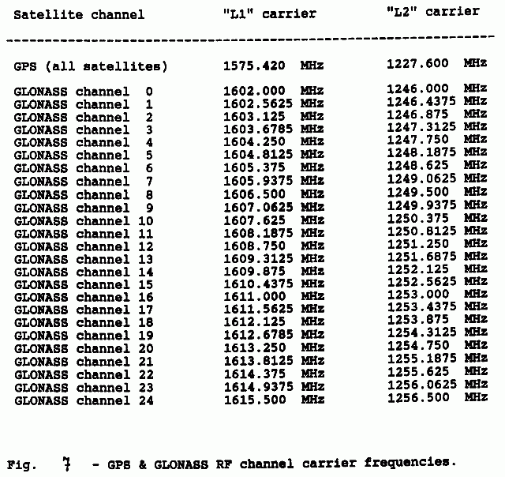
Every GPS satellite transmits its own set of C/A- and
P-codes that have good cross-correlation properties with the
codes used by other GPS satellites. Since a GPS receiving
antenna is omnidirectional and receives many satellites at the
same time, the receiver is using Code-Division Multiple Access
(CDMA) techniques to separate signals coming from different
satellites. GPS satellites are therefore identified by the
Pseudo-Random-Noise code number (PRN#).
The GLONASS satellites use 25 different RF channels.
Channel 0 is reserved for testing spare satellites while
channels 1 to 24 are dedicated to operational GLONASS
satellites. All GLONASS satellites transmit the same C/A-code
and are usually identified by the CHannel Number (CHN#).
The L1 and L2 carrier frequencies are in the exact ratio 9/7
and the channel spacing is 562.5kHz at L1 and 437.5kHz at L2.
Although there exist civilian P-code receivers, the
majority of civilian GPS or GLONASS receivers are C/A-only
receivers. Since the advantages of using the P-code are
limited, especially with SA, AS or both active, only the
C/A-code transmission will be discussed in detail here.
2.6. GPS C/A-transmission format
GPS satellites use code-division multiplexing on both
C/A- and P-transmissions. Since C/A-codes are relatively short
sequences (only 1023 bits), the codes have to be carefully
selected for good cross-correlation properties. GPS C/A-codes
are Gold codes (named after their inventor Robert Gold) that
can be generated as a modulo-2 sum of two maximum-length
shift-register sequences.
The GPS C/A-code generator is shown on Fig.08. It
includes two 10-bit shift registers G1 and G2, both clocked
at 1.023MHz, each with a separate feedback network made of
exclusive-or gates. Both feedback networks are selected so
that both generated sequences have the maximal length of 1023
bits. Both shift registers are started in the "all-ones" state
and since both sequences have the same length, the shift
registers maintain the synchronization throughout the
operation of the circuit.
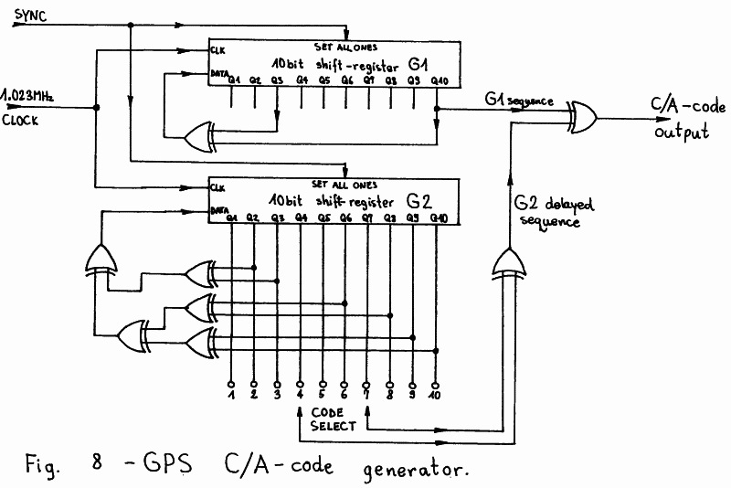
Gold codes are obtained by a modulo-2 sum (another
exclusive-or operation) of the outputs of the two shift
registers G1 and G2. Different codes can be obtained by
changing the relative phase of the two shift registers.
Instead of resynchronizing the shift registers it is easier to
delay the output of one of them (G2). This variable delay is
achieved with yet another modulo-2 sum (exclusive-or) of two
G2 register taps. Exclusive-or feedback shift-regiter
sequences have the property that a modulo-2 addition of a
sequence with its delayed replica produces the same sequence,
but delayed by a different number of clocks.
Choosing two G2 register taps, 45 different delays can
be generated yielding 45 different Gold codes with good
auto-correlation and cross-correlation properties. Out of
these 45 possible codes, 32 are allocated to GPS satellites
as shown on Fig.09. The cross-correlation properties of GPS
C/A-codes guarantee a crosstalk smaller than -21.6dB between
the desired and undesired satellite signals.
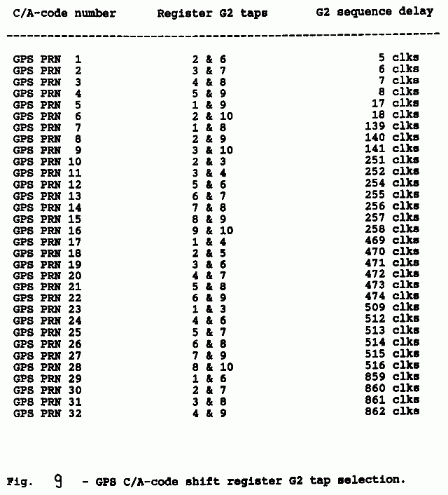
The 50bps navigation data stream is synchronized with the
C/A-code generator so that bit transitions coincide with the
"all-ones" state of both shift registers G1 and G2. At 50bps
one data bit corresponds to 20 C/A-code periods.
The navigation data is formatted into words, subframes
and frames. Words are 30 bits long including 24 data bits and
6 parity bits computed over the 24 data bits and the last two
bits of the previous word. Parity bits are used to check the
received data for errors and to resolve the polarity ambiguity
of the BPSK demodulator. 10 words (300 bits) form a subframe
which always includes a subframe sync pattern "10001011" and
a time code called "Time-Of-Week" (TOW). One subframe is
transmitted every 6 seconds.
Five subframes form one frame (1500 bits) that contains
all of the information required to use the navigation signals.
One frame is transmitted every 30 seconds. The first subframe
in the frame contains the on-board clock data: offset,
drift etc. The second and third subframes contain the
precision ephemeris data in the form of Keplerian elements
with several correction coefficients to accurately describe
the satellite's orbit. Finally, the fourth and fifth subframes
contain almanac data that is not required immediately and
are sub-commutated in 25 consecutive frames, so that the whole
almanac is transmitted in 12.5 minutes.
The allocation of the single data words is completely
described in [5]. Most numerical parameters are 8-, 16-,
24- or 32-bit integers, either unsigned or signed in the
two's complement format. Angular values that can range from
0 to 360 degrees are usually expressed in semi-circles to
make better use of the available bits.
GPS is also using its own time scale. The units are
seconds and weeks. One week has 604800 seconds and the week
count is incremented between Saturday and Sunday. GPS time
starts on the midnight of January 5/6, 1980. GPS time is a
continuous time and therefore it differs by an integer number
of leap seconds from UTC. The difference between UTC and GPS
time is included in the almanac message.
2.7. GLONASS C/A-transmission format
GLONASS satellites use the more conventional
frequency-division multiplexing at least for the C/A-code
transmissions. All GLONASS satellites use the same C/A-code,
generated by a 9-bit shift register G as shown on Fig.10.
The GLONASS C/A-code is a maximum-length sequence and thus
has an ideal auto-correlation function.
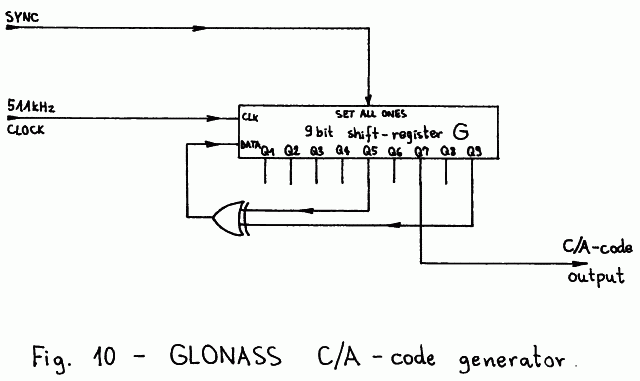
Frequency-division multiplexing allows a better channel
separation than code-division multiplexing. The separation
between two adjacent GLONASS channels should be better than
-48dB. A large channel separation is useful when the signal
from one satellite is much weaker because of reflected waves
and/or holes in the receiving antenna radiation pattern.
On the other hand, the GLONASS satellites require a wider RF
spectrum and a GLONASS C/A-receiver is necessarily more
complex than a GPS C/A-receiver.
The GLONASS navigation data stream is synchronized with
the C/A-code generator so that level transitions coincide
with the "all-ones" state of the shift register. The
navigation data stream is formatted into lines of the duration
of 2 seconds. Each line contains 85 information bits,
transmitted at 50bps for 1.7 seconds and a "time mark" sync
pattern "111110001101110101000010010110", which is a
pseudo-random sequence of 30 bits transmitted at 100bps for
the remaining 0.3 seconds.
The 85 information data bits always start with a leading
"0", followed by 76 bits containing navigation information
and 8 parity-checking bits, computed according to the (85, 77)
Hamming code. After computing the parity bits, all of the
85 bits are differentially encoded to resolve the phase
ambiguity in the receiver. Finally, the 85 differentially-
-encoded bits are manchester encoded, so that a "10" pattern
corresponds to a logical "one" and a "01" pattern corresponds
to a logical "zero". The additional transition in the middle
of the data bits introduced by the manchester encoding
speeds-up the synchronization of the receiver.
15 navigation data lines form one frame of the duration
of 30 seconds. The allocation of the single data bits in the
frame is completely described in [6]. The first four lines
of a frame contain the time code, on-board clock offset and
drift and precision ephemeris data of the satellite orbit in
the form of a state vector (position vector and velocity
vector). To simplify the computations in the user's receiver,
the corrections for the Sun- and Moon-gravity forces are
also supplied.
The almanac data is transmitted in the remaining 11 lines
of the frame. Almanac satellite ephemeris is in the form of
Keplerian elements and is transmitted in two consecutive lines
in a frame. The whole almanac is transmitted in five
consecutive frames also called a superframe of the duration of
2.5 minutes. The various numerical parameters are transmitted
as different size, either unsigned or signed integers. Signed
integers are transmitted in the form of a sign bit followed
by an unsigned integer representing the absolute value of the
number (this is different from the two's complement notation!)
Angular values are usually expressed in semi-circles.
The GLONASS time is kept synchronized to UTC. GLONASS
uses more conventional time units like days, hours, minutes
and seconds. The day count begins with a leap year (currently
1992) and counts up to 1461 days before returning back to
zero.
3. GPS & GLONASS receiver theory of operation
3.1. GPS/GLONASS receiver operation principles
Since the signals transmitted by GPS and GLONASS
satellites are similar, the receiver design for any of these
systems follows the same guidelines. The principle block
diagram of a GPS or GLONASS receiver is shown on Fig. 11.
Only a single channel receiver is shown for simplicity. The
problem of simultaneously receiving more than one signal (like
the C/A-signal and both P-signals from four or more satellites)
will be discussed later.
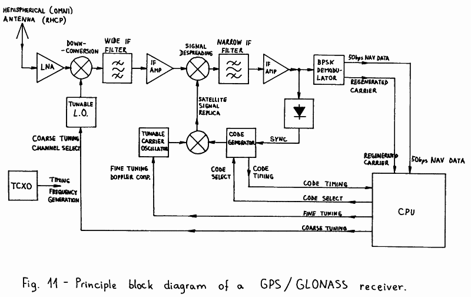
Since the user's position, velocity and attitude are
unknown in a navigation problem, satellite navigation receivers
generally use either one or more omnidirectional antennas.
All satellite navigation signals are circularly polarized
(usually RHCP) to allow the user's receiver to further
attenuate any reflected waves, since circularly polarized
waves change their sense of polarization on each reflection.
Reflected waves are a major nuisance in precision navigation
systems: they represent an unpredictable propagation anomaly
which is a major source of measurement errors.
The radio signals collected by an omnidirectional
receiving antenna are weak. A low-noise amplifier will prevent
any further degradation of the signal-to-noise ratio, but it
can not reduce the thermal noise collected by the antenna nor
unwanted navigation satellite transmissions on the same
frequency. GPS and GLONASS satellite signals are wideband,
ranging from 1MHz (GLONASS C/A-code) to 20MHz (GPS P-code),
and the satellite transmitter power is limited to around
25dBW EIRP (L1 C/A-code for both GPS and GLONASS) or even less
than this (P-transmissions), making the signal usually weaker
than the thermal noise collected by the antenna.
Although buried in thermal noise and interferences, these
signals can still be used, since the given bandwidth and
megabits-per-second rates apply to a known code and not to
the information bandwidth, which is smaller than 1kHz for both
timing and Doppler-shift measurements and the navigation data
transmitted at 50bps. In other words, GPS and GLONASS signals
are direct-sequence spread-spectrum signals, using
Code-Division Multiple Access (CDMA) techniques [7].
A GPS or GLONASS receiver will first downconvert the
signals to a suitable IF and amplify them before further
processing. At this stage a wide IF filter, corresponding to
the complete original signal bandwidth, can be used to improve
the dynamic range of the receiver. The downconverter may be
made tunable if widely separated channels are to be received,
like the GLONASS C/A-transmissions.
The wideband IF signal is then multiplied by (mixed with)
a locally-generated satellite signal replica, modulated by
the same code. If the locally generated code is synchronized
to the satellite transmission, the bandwidth of the desired
mixing product will collapse down to almost zero, since two
identical 0/180-degrees BPSK modulation processes exactly
cancel each other. On the other hand, the bandwidth of all
unwanted signals, like noise or interferences, will be further
expanded by this operation to a double bandwidth.
Since the bandwidth of the desired signal collapses, this
operation is usually called signal spectrum despreading. The
desired signal can now be filtered-out with a narrow IF filter
having a bandwidth ranging from 100Hz to 10kHz in a GPS or
GLONASS receiver. After the narrow IF filter, the
signal-to-noise ratio finally achieves usable values and
typically reaches 20dB.
The filtered IF signal is then used for several purposes.
First, it is used to acquire and maintain synchronization of
the locally generated code. Dithering the locally-generated
code back and forth by a fraction of the bit period generates
an amplitude modulation on the filtered signal. The phase of
this modulation contains the information required to keep
the synchronization of the local code generator.
The filtered IF signal is also fed to a BPSK demodulator
(usually a squaring PLL or a Costas PLL) to extract the 50bps
navigation message data. The BPSK demodulator also provides a
regenerated carrier that is used for Doppler-shift
measurements. On the other hand, the code-timing information
is obtained from the local code generator. All three signals,
code timing, Doppler shift and 50bps navigation data are fed
to the receiver CPU to compute the user position, velocity,
accurate time etc...
For Earth-located, slowly-moving users, the Doppler
shift on the satellite signals is mainly due to the satellite
motion and amounts up to +/- 5kHz on the L1 frequency.
In most cases some fine tuning will be required to compensate
the Doppler shift in front of the narrow IF filter. Some
fine-tuning capability is also required to compensate the
local oscillator frequency drift. In GPS and GLONASS receivers
all of the required frequencies are obtained from a single
TCXO with a stability of a few parts per million. Since one
part per million is 1.6kHz at the L1 frequency, the frequency
uncertainty of the receiver is comparable in magnitude to the
expected Doppler shift.
Like in all spread-spectrum systems, the initial code
sync acquisition is a critical operation in a GPS or GLONASS
receiver. Most receivers make an exhaustive search for
C/A-code synchronization. Testing a possible code phase
typically takes around 10 milliseconds each, so an exhaustive
search may take more than 10 seconds. This figure needs to
be multiplied by the number of frequencies tested, due to
an unknown Doppler shift or unpredictable TCXO drift.
A "cold start" of a GPS or GLONASS receiver may therefore
take up to one hour, since the receiver does not know which
satellite (PRN# or CHN#) to look for nor the Doppler shift
nor the code phase. A "warm start" is much faster since
the receiver should know the almanac satellite ephemeris, the
approximate user location and the approximate time. From this
information one can get all visible satellites and compute
the corresponding Doppler shifts, so that the code phase and
the TCXO drift are the only unknowns left.
The period of the P-code is far too long to make an
exhaustive sync search practical. All P-code receivers need
to acquire the C/A-code first, decode the navigation data
and synchronize their local P-code generator to the C/A-code
transmission first. Since the P-code rate is only 10 times
the C/A-code rate, there are very few possible P-code phases
left to be tested to lock on the P-transmission.
GPS and GLONASS have been designed to supply timing
codes, the user position being computed from the measured
propagation time differences. Additionally, the user velocity
can be computed from the already known position and the
measured Doppler-shift differences on the signal carriers.
Although the Doppler shift can also be measured on the code
rates, this measurement is usually very noisy. On the other
hand, no absolute delay difference can be measured on the
carrier, since the carrier phase becomes ambiguous after
360 degrees. Finally, relating the carrier phase to the code
phase may produce excellent results, but requires an accurate
compensation of ionospheric effects, which have opposite
signs: the ionosphere delays the modulation and at the same
time advances the carrier phase!
Besides the described principle of operation of a GPS
or GLONASS receiver, there are some other possibilities.
For example, the C/A-code sync could be obtained much faster
using an analog (SAW) or digital (FFT) correlator.
To evaluate ionospheric errors, codeless reception techniques
can be used to receive both P-transmissions on L1 and L2
frequencies without even knowing the codes used.
3.2. Digital Signal Processing (DSP) in GPS/GLONASS receivers
After the principles of operation and the required
functions of an electronic circuit are known, one has to
decide about the technology to practically implement the
circuit. In most cases GPS or GLONASS receivers are mobile
units installed on vehicles or even portable handheld units.
The receiver weight, size and power consumption are all
important. While every GPS or GLONASS receiver must have an
antenna, a RF front-end and a digital computer to solve the
navigation equations, the IF signal processing may include
just a single channel in a simple C/A-only receiver or more
than 10 channels in a full-spec L1 & L2 P-code receiver.
When the same circuit function needs to be duplicated
several times, like the IF processing channels in a
radio-navigation receiver, it is usually convenient to use
Digital Signal Processing (DSP) techniques. An important
advantage of DSP over analog circuits is that duplicated
channels are completely identical and require no tuning or
calibration to accurately measure the difference in the
time of arrival or Doppler shift of radio-navigation signals.
A single DSP circuit can also be easily multiplexed among
several signals, since the internal variables of a DSP circuit
like a PLL VCO frequency or phase can be stored in a computer
memory and recalled and updated when needed again.
The bandwidth of the navigation satellite signals is
several MHz and this is a rather large figure for DSP.
Implementing the whole IF signal processing of a GPS/GLONASS
receiver completely in software (like described in the
introduction to DSP techniques in [8]) is difficult although
it has been done [9] for the GPS C/A-code using powerful
microcomputers. Most GPS/GLONASS receivers use a combination
of dedicated DSP hardware and software for IF signal
processing. Dedicated DSP hardware is only used where the
the bandwidth is large and the functions are relatively
simple, like the local satellite signal replica generation and
the signal despreading, while all other functions, including
all feedback loops, are implemented in software.
When designing a DSP circuit and in particular when
designing dedicated DSP hardware it is essential to know,
besides the signal bandwidth or sampling frequency, also the
resolution or number of bits per sample required to represent
the signals involved [10]. A GPS or GLONASS signal is a
constant amplitude signal and limiting is therefore not
harmful. However, after the wide IF filter in the receiver
there is a mix of many satellite signals of different strength
and lots of thermal noise as well. If such a mix of signals is
limited, the resulting intermodulation distortion degrades the
signal-to-noise ratio by around 2dB.
Since navigation satellite signals are pseudo-random
sequences, all undesired signals and all intermodulation
products only affect the desired signal in the same way as
thermal noise. Therefore, in a GPS/GLONASS receiver, very few
bits are required to represent the wideband IF signal. Most
GPS/GLONASS receivers simply limit the wideband IF signal,
thus accepting the 2dB sensitivity degradation and
representing each sample with just two quantization levels
or one single bit. Increasing the number of bits per sample
only increases the DSP hardware complexity while bringing
marginal sensitivity improvements, so that no known receiver
design uses more than 3 bits per sample (8-level
quantization).
On the other hand, an 1-bit/sample DSP GPS/GLONASS
receiver may have a really simple IF signal processing as
shown on the principle block diagram on Fig. 12. The IF signal
is limited, so no AGC is required. Signal sampling and A/D
conversion is performed by a single D-flip-flop. Signal
despreading or multiplication with the locally generated
signal replica is accomplished with an exclusive-or gate.
Since the narrow IF can be selected close to zero, the narrow
IF bandpass filter may be replaced by a lowpass filter or
an integrator. In the case of 1-bit samples, the latter is
simply a counter with the clock set to the sample rate and
gated by the input signal.
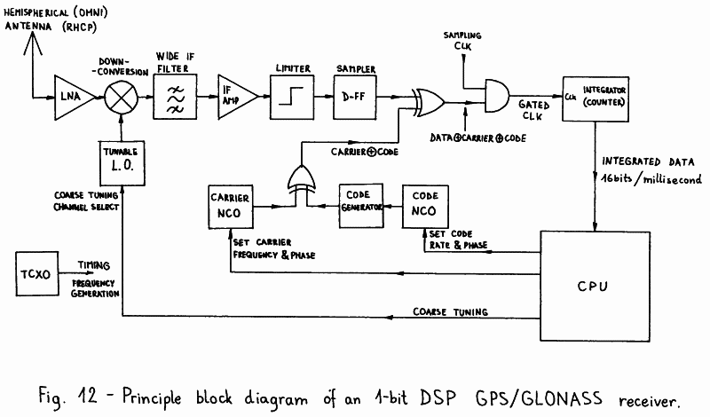
However, after the narrow IF filtering the resulting
signal can no longer be represented with a single bit per
sample, if the sample rate of the narrowband signal is
significantly reduced. In a C/A-code receiver, the integrator
is read and then reset each millisecond, to match the period
of either GPS or GLONASS C/A-codes, since the auto- and
cross-correlation properties of these codes are only
maintained over an integer number of code periods. An
integration period of 1ms corresponds to a narrow IF bandwidth
of +/- 500Hz around the center frequency. The latter is a very
good choice for a GPS or GLONASS receiver.
Any further signal processing after the integration can
be conveniently performed in software, since an interrupt rate
of only 1kHz can be accepted by any microprocessor. The
accumulated data in the integrator has a resolution of
12 to 14 bits, so any further software processing can be done
without any loss of quantization accuracy nor processing speed
of a general-purpose 16-bit microprocessor.
Dedicated hardware is also required for the generation of
the local signal replica. Carriers or rates are conveniently
generated in Numerically Controlled Oscillators (NCOs).
A NCO includes a digital adder and an accumulator. In every
clock cycle, a constant representing the desired output
frequency or rate is added to the accumulator. If an analog
output were desired, the accumulator content could be fed to
a ROM containing a sine table and then to a D/A converter,
forming a direct digital frequency synthesizer.
In a 1-bit DSP navigation-receiver the sine table and
D/A converter are not required. Since the DSP hardware
operates with 1-bit data, it is sufficient to take the MSB
of the NCO accumulator as the frequency output. Two NCOs are
required: on for the carrier frequency and another for the
code rate. The code-rate NCO supplies the clock to a code
generator like the ones shown on Fig. 8 or 10. The output
of the code generator is exclusive-or gated with the output
of the carrier NCO to produce a BPSK-modulated satellite
signal replica.
Of course both NCOs have to be accurately steered to the
required frequency and phase to maintain lock on the incoming
signal. The feedback function can be performed by the
microprocessor, since the feedback speed is very low: a 100Hz
update rate is usually fast enough. Finally, the NCO frequency
can be easily steered modifying the addition constant and the
NCO phase can be easily steered modifying the accumulator
content. In a time-multiplexed IF channel, both can be easily
stored by the microprocessor and recalled when the channel
hardware is switched back to the same satellite signal.
From the technology point of view, a DSP IF channel can
be built on an "Eurocard" size printed circuit board using
just bare 74HCxxx logic. A single IF channel may also be
programmed in a programmable-logic integrated circuit.
Finally, the complete IF signal processing with 6 or 8
independent channels may be integrated in a single custom
integrated circuit. Commercial satellite navigation receivers
use custom integrated circuits essentially to prevent
unauthorized duplication. On the other hand, bare 74HCxxx
logic is preferred for an amateur, homemade receiver.
Hopefully programmable-logic ICs will some day become
standardized and the necessary programming tools cheap enough
to allow amateur applications.
3.3. Multi-channel reception of navigation signals
A satellite navigation receiver should be able to
receive the signals from four or more satellites at the same
time, to be able to measure time and Doppler differences.
When the GPS specifications were published back in 1975 [4],
the digital computer was the largest and most complex part of
a satellite navigation receiver. Both GPS and GLONASS
receivers were initially intended to have several analog
IF processing channels, one per each signal type per
satellite. Since these receivers were intended for military
vehicles like fighter aircrafts, tanks or battle ships,
the price and complexity of several analog IF processing
channels was almost unimportant.
Early civilian GPS receivers also used analog IF
processing, although initially limited to the C/A-code and
one or two time-multiplexed IF channels. Time-multiplexing
is difficult with analog IF channels, since the latter have
to reacquire lock each time the satellites are changed.
Lock acquisition may take 15 to 20 seconds, so that the
measurement loop through four or more satellites takes
several minutes. These receivers were only suitable for
stationary or slowly-moving users.
The introduction of DSP techniques and inexpensive
computers allowed much faster multiplexing. Since the
variables of a DSP circuit can be stored and recalled, a DSP
IF channel does not need to reacquire lock each time it is
switched to another satellite signal. A DSP IF channel is
typically switched among satellite signals around a hundred
times per second making the whole loop among all required
signals a few ten times per second. However, because of the
available signal-to-noise ratio, the navigation solution in a
C/A-code receiver only needs to be computed about once per
second.
All current commercial GPS and GLONASS receivers use
DSP IF processing. Small handheld C/A-code receivers have one,
two or three time-multiplexed IF channels. Mobile C/A-code
receivers have 5, 6 or even 8 independent channels so that
no multiplexing is required. Time multiplexing makes the
carrier lock and Doppler measurements difficult and
unreliable, so it is undesired in mobile receivers.
Unfortunately, multi-channel GLONASS receivers require a
wider raw signal IF and a much higher sampling rate due to
the wide FDMA channel spacing. On the other hand, GPS
receivers require the same raw IF bandwidth regardless of the
number of channels thanks to CDMA. The higher sampling rates
required for GLONASS are a little unpractical with currently
available integrated circuits. Maybe this is another reason
why GPS receivers are more popular and GLONASS is almost
unknown. Since faster ICs will certainly be available in
the future, one can expect that combined GPS/GLONASS
receivers will become standard.
In this article I am going to describe a single-channel
C/A-only receiver using fast time multiplexing. This receiver
can be built in two versions: GPS or GLONASS. Although both
versions use the same modules as much as possible, this is
not a combined GPS/GLONASS receiver yet. The main limitation
of a single IF channel, time-multiplexed receiver is that the
maximum number of simultaneously tracked satellites is limited
to four or five, so that a combined GPS/GLONASS receiver does
not make much sense.
3.4. Practical GPS receiver design
The block diagram of the described GPS receiver is shown
on Fig. 13. In the microwave frequency range, at L-band, the
antenna needs a direct visibility of the satellites. Therefore
it has to be installed outdoor, on the vehicle roof or on top
of a portable receiver. Due to its excellent performance, a
half-turn quadrifilar helix is used as a circularly polarized,
hemispherical-coverage antenna. The LNA is installed directly
under the antenna. Using two inexpensive GaAs FETs it achieves
30dB of gain making any following (reasonable) cable loss
almost unimportant.
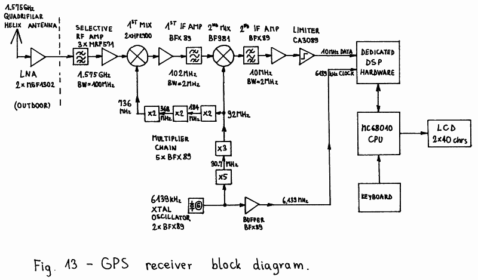
The GPS receiver includes a fixed-tuned downconverter to
a suitable IF, an IF amplifier and limiter, a dedicated DSP
hardware, a MC68010 based microcomputer with a small keyboard
and a LCD display and a single master crystal oscillator for
all frequency conversions and sampling rates. The
downconversion from the GPS L1 frequency (1575.42MHz) is made
in two steps for convenient image filtering. The first wide IF
is in the 102MHz range and the second wide IF is in the 10MHz
range. The wide IF bandwidth is set to around 2MHz. The actual
value of the wide IF bandwidth is not critical, since filtering
is only required to prevent spectrum aliasing in the signal
sampling circuit.
6139kHz was selected as master crystal oscillator
frequency of the described GPS receiver, since the best TCXOs
are usually available for the frequency range between 5MHz
and 10MHz. The output of the 6139kHz master oscillator is
used both as the sampling frequency for the IF A/D conversion
and as an input to a chain of multiplier stages to supply all
of the frequencies required in the downconverter. Limiting
the temperature range from 0 to 30 degrees C, as encountered
during normal receiver operation, the TCXO was replaced by a
much less expensive conventional crystal oscillator in all of
the prototypes built.
Sampling the 10MHz wide-IF signal with 6139kHz produces
a third downconversion to a 2303kHz nominal center frequency.
The latter is the final carrier frequency that needs to be
regenerated in the dedicated DSP hardware. The dedicated DSP
hardware is designed as a microprocessor peripheral with
read and write registers and is interrupting the MC68010
CPU once every millisecond to match the GPS C/A-code period.
In the portable, stand-alone GPS receiver, the
operating software is stored in a compressed form in a
32kbytes EPROM. After power-on reset, the software is
decompressed in 128kbytes of battery-backed CMOS RAM, which
is also used to store the system almanac and other data to
speed-up the acquisition of four valid satellites. For the
same reason the CPU also has access to a small battery-backed
real-time clock chip.
A small 8-key keyboard is used to select the various
menus of the operating software and manually set some receiver
parameters if so desired. The portable version of the GPS
receiver is using a LCD module with integrated driving
electronics and two rows of 40 alphanumeric (ASCII) characters
each, to display the receiver status, the almanac data or
the results of the navigation computations.
3.5. Practical GLONASS receiver design
The block diagram of the described GLONASS receiver is
shown on Fig. 14. The GLONASS receiver uses the same type of
antenna and LNA and the same dedicated DSP hardware and
microcomputer as its GPS counterpart. The main difference
between the two receivers is in the downconverter. The GLONASS
receiver includes a tunable downconverter, otherwise the wide
FDMA channel spacing would require unpractically high sampling
rates in the dedicated DSP hardware.
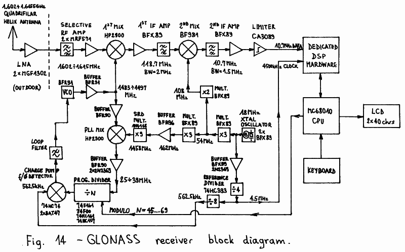
The downconversion from the GLONASS L1 frequency range
(1602 to 1615.5MHz) is made in two steps for convenient image
filtering. To reduce group-delay variations, the first
conversion is made tunable and the second is fixed. In this
case the only contribution to group-delay variations across
the GLONASS L1 frequency range are the tuned circuits at
1.6GHz. Group-delay variations introduce errors in the
measured time differences, so they immediately affect the
accuracy of a navigation receiver. This problem does not
exist in a GPS receiver, since all GPS satellites transmit
on the same carrier frequency and any signal filtering
produces the same group delay on all satellite signals that
exactly cancels-out when computing the differences.
Both wide IFs are fixed tuned at 118.7MHz and 10.7MHz
respectively. To avoid any group-delay variations in the
wide IFs, the frequency synthesizer steps must accurately
match the channel spacing so that all signals are converted
to the same IF values. Finally, the IF limiter should not
introduce a variable delay as the input signal strength is
changed when switching among channels. The second wide IF
signal at 10.7MHz is sampled with 4500kHz producing a third
downconversion to a nominal center frequency of 1687.5kHz.
There are several difficult-to-meet requirements for
the frequency synthesizer supplying the signal for the first
conversion. This synthesizer has to provide a clean signal
in the frequency range from 1483 to 1497MHz in steps of
562.5kHz. Its phase noise should be low enough to allow
carrier lock and 50bps navigation data demodulation: its
spectral linewidth should be about 10 times narrower than
required in a voice SSB receiver. Finally, in a
time-multiplexed, single-channel receiver the synthesizer
should be able to switch and settle to another frequency in
less than 1ms, the GLONASS C/A-code period, to avoid
increasing the switching dead time.
The frequency synthesizer is a PLL with a frequency
converter in the feedback loop, to decrement the divider
modulo, increase the loop gain, speed-up the settling and
improve the output phase noise performance. The feedback
signal is downconverted to the frequency range 25 to 38MHz,
so that a very low programmable loop-divider modulo
between 45 and 69 is required. The comparison frequency is
set to 562.5kHz. A well-designed PLL will settle in
100 to 200 clock periods of the comparison frequency and the
described PLL achieves this performance with a settling time
between 200 and 300 microseconds.
The described GLONASS receiver is using a master crystal
oscillator at 18.000MHz. This frequency is multiplied by 6
to obtain the 108MHz signal required for the second conversion
and by 81 to obtain the 1458MHz signal required for the PLL
feedback-loop conversion. The master oscillator frequency is
divided by 4 to obtain the 4500kHz sampling frequency and
by 32 to obtain the 562.5kHz PLL reference frequency.
Like in the GPS receiver, in place of an expensive TCXO
conventional crystal oscillators were used in all of the
prototypes built, limiting somewhat the operating temperature
range.
In the described GLONASS receiver, the microcomputer
has one function more. Besides controlling the dedicated DSP
hardware, keyboard and LCD display, all identical to the GPS
counterparts, the microcomputer has to set the frequency
synthesizer when switching among channels. The operating
software is very similar to that in the GPS receiver and has
the same hardware requirements: 32kbytes of EPROM, 128kbytes
of battery-backed CMOS RAM and a battery-backed real-time
clock.
3.6. GPS/GLONASS dedicated DSP hardware design
Although the theory of operation of an 1-bit DSP GPS or
GLONASS receiver has already been discussed, the practical
implementation still offers many different choices and
some additional problems to be solved. For example, from the
theoretical point-of-view it is unimportant whether the
code lock or the carrier lock is achieved first. In practice,
the code lock should be achieved first and should be
completely independent from the carrier lock, both to speed-up
the initial signal acquisition and to avoid loosing lock at
short signal dropouts (obstructions, fading) or receiver
frequency reference instabilities.
The block diagram of the practically implemented
GPS/GLONASS dedicated DSP hardware is shown on Fig. 15.
Although the implemented hardware is intended for a single
channel, time multiplexed operation, it differs significantly
from the theoretical block diagram shown on Fig. 12. The main
difference is that there are four signal-despreading mixers
(multipliers, ex-or gates) and four integrators (counters) for
one single channel.
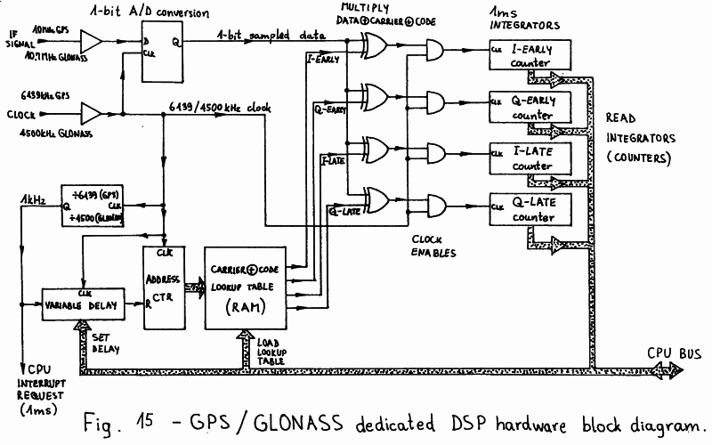
In practice, two separate signal-despreading mixers are
required when downconverting to a narrow IF of almost zero.
The mixers are driven with the same satellite signal replica,
modulated with the same code, but with the carriers in
quadrature. In this way no information is lost after signal
despreading, downconversion and integration. The code lock
can be made completely independent from the carrier lock,
since the narrow IF signal amplitude can be computed out of
the I and Q integration sums without knowing the carrier
phase. The same I and Q integration sums are used in a
different way to achieve carrier lock and extract the 50bps
navigation data. Due to the low sample rate (1kHz) the latter
are conveniently performed in software.
Although code lock may be maintained by dithering the
locally generated signal replica, two separate narrow IFs
for an "early" and a "late" local signal replica provide a 3dB
improvement in the signal-to-noise ratio on time-delay
measurements. The former solution, code dithering, is usually
used in receivers with an analog narrow IF, since it is
difficult to build two identical circuits in analog technology.
The latter solution is used in receivers with a DSP narrow IF,
since DSP circuits perform the same numerical operations and
are therefore mathematically identical.
To achieve the 3dB signal-to-noise improvement, two
separate sets of I and Q signal-processing chains for the
"early" and "late" signal replicas need to be used. This
brings the total number of signal-despreading mixers and
integrators to four. Of course the local signal replica
generation includes the generation of four different signals:
I-EARLY, Q-EARLY, I-LATE and Q-LATE. All these signals can
be obtained from a single carrier and code generator, since
they are merely delayed versions of the same signal: either
the carrier or the code or both are delayed. In DSP, delays
can be easily obtained with shift registers.
On the other hand, the local satellite signal replica
generation can be simplified with a look-up table. Since
the integration period is 1ms and the input sample rate is
6139kHz (GPS) or 4500kHz (GLONASS), there are only 6139 or
4500 different bits to be stored in the look-up table for
each despreading mixer and integrator. The look-up table
is written by the microcomputer since it does not need to
be updated very frequently.
The carrier frequency only needs to be updated less than
once per minute while the carrier phase can be adjusted in
software since both I and Q integration sums are available.
The code rate does not need to be adjustable if the code phase
can be corrected every 10 milliseconds. For the latter reason
the code phase is made adjustable in hardware by a
variable-delay circuit.
The variable-delay circuit used to adjust the code phase
also brings a disadvantage. The carrier frequency can only be
adjusted in steps of 1kHz, since the carrier phase should be
continuous when the address counter reaches the end of the
look-up table and is reset back to the beginning. The carrier
frequency error can therefore reach +/- 500Hz and although
it is compensated in software, it degrades the sensitivity
of the receiver by up to 4dB (at +/- 500Hz error).
There are several ways to avoid this problem, like two
separated code and carrier look-up tables or a double-length
table with a presettable address counter. However, in
practice the simplest circuit was preferred in spite of the
4dB sensitivity penalty. Both GPS and GLONASS receiver
prototypes are therefore using the simple look-up table
generator described above.
The local signal replica generation also explains the
choice of the input sampling rates and wide IF nominal center
frequencies. Ideally, to avoid spectrum aliasing the wide IF
nominal center frequency should be equal to 1/4 of the sampling
rate or any odd multiple of this value: 1536kHz for GPS or
1125kHz for GLONASS.
In practice 6139kHz was selected as the sampling rate for
the GPS receiver to avoid interferences with the GPS C/A-code
rate (1023kHz), since the described look-up table generator
maintains a fixed phase relationship between the code
transitions and sampling rate. Considering the various
conversion frequencies obtained from the same source, an IF
of 2303kHz resulted after signal sampling.
In the GLONASS receiver, any interferences between the
sampling rate and code rate are unimportant since all
satellites use the same C/A-code. The sampling rate of 4500kHz
was chosen for convenience. Considering the operation of the
frequency synthesizer, the final wide IF value could be chosen
in 562.5kHz steps. The value of 1687.5kHz was selected to
avoid some spurious frequencies generated in the synthesizer.
Finally, the described dedicated DSP hardware always
requires the support of a microcomputer. The latter should
compute and load the look-up tables first. After each
interrupt request (every millisecond) the microcomputer
reads all four integrated sums. From the I and Q components
it computes the early and late magnitudes used to search and
maintain code lock. The code phase required to maintain lock
is at the same time the result of a time-delay measurement,
referenced to the receiver clock. The difference of two
such measurements is a parameter of a navigation equation.
On the other hand, the I average and Q average are
supplied to a Costas-loop demodulator to recover the carrier
and demodulate the 50bps navigation data bits. Then the
subframe or line sync is detected to format the data stream
and check the parity bits before the navigation data is used
in the computations.
* * * * *